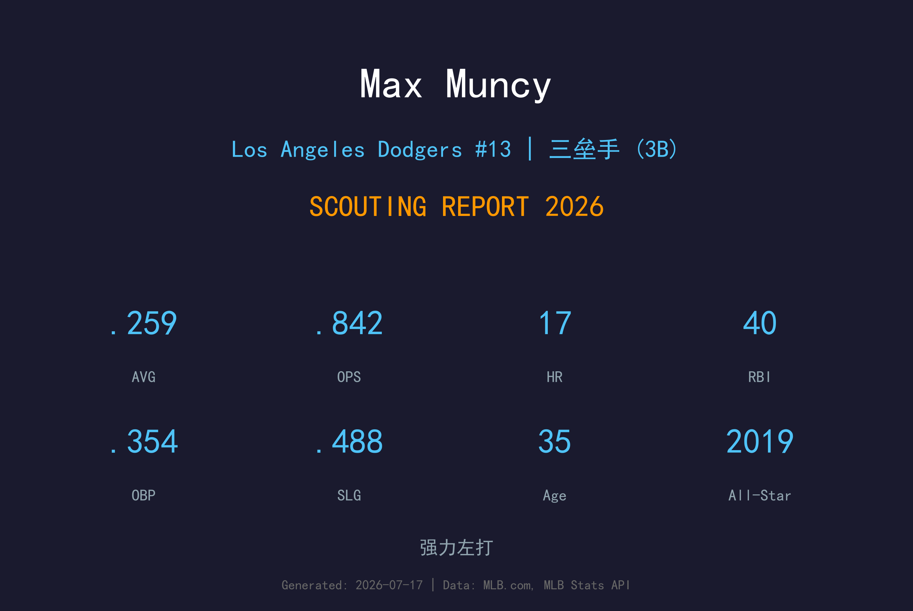
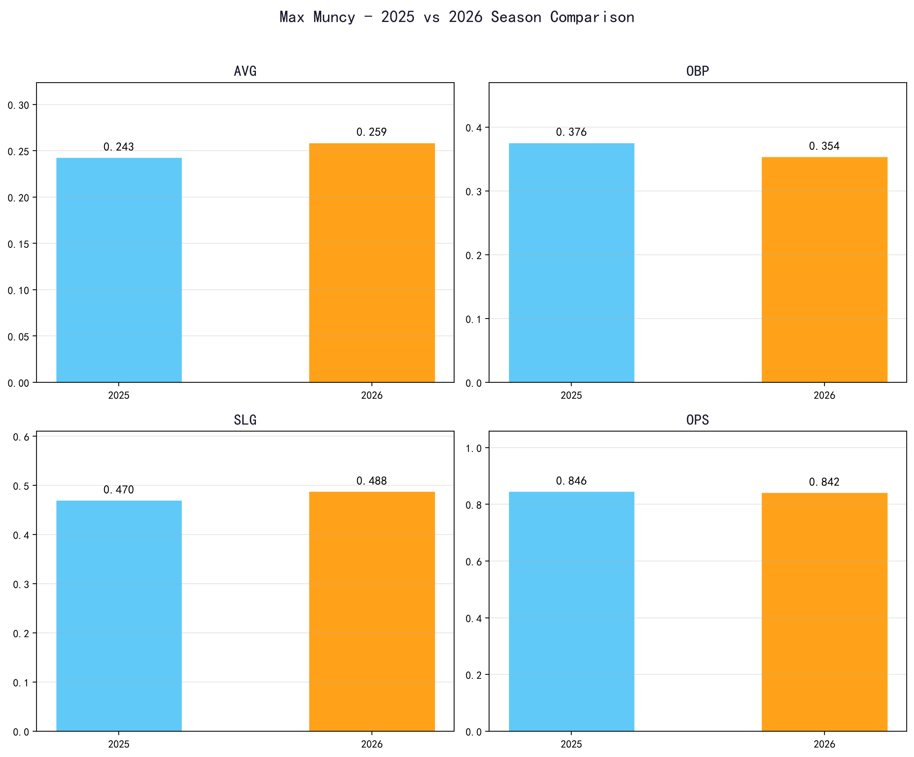
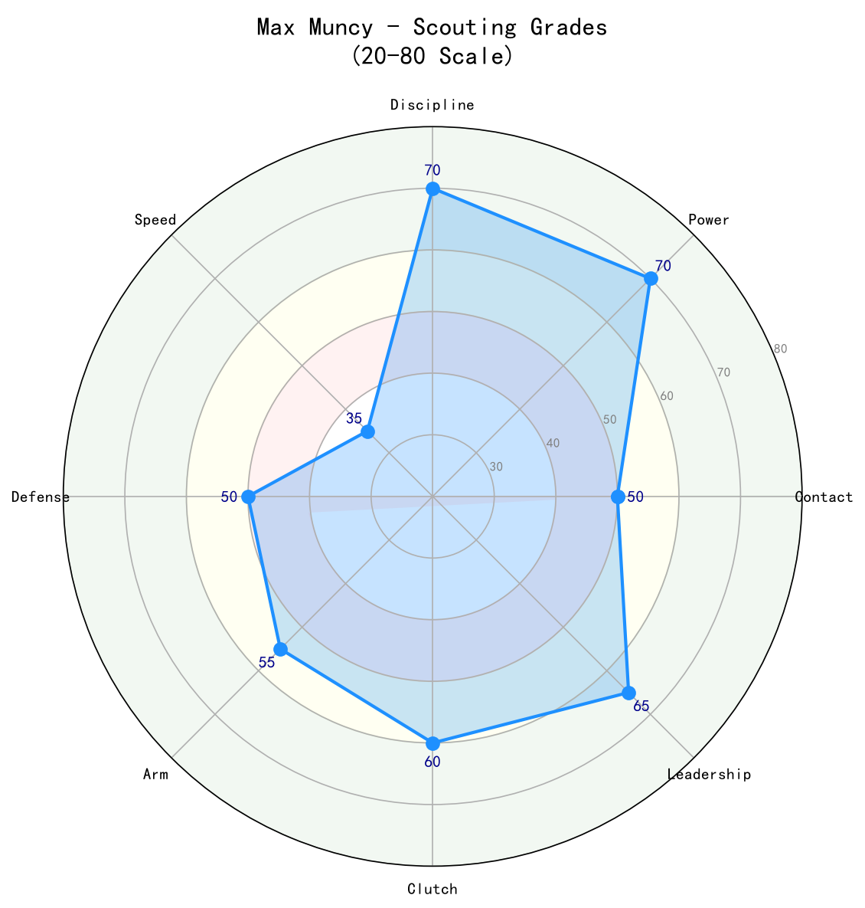

Los Angeles Dodgers #13 | 三垒手 | 左打 | 强力左打

Max Muncy 是道奇队近年来最具代表性的力量型左打者之一，以高保送率、强劲拉打力量和大赛经验闻名。
2026年，35岁的 Muncy 仍维持.259/.354/.488、.842 OPS 的高效产出，其中长打率.488显示他的power tool并未衰退。他是道奇打线中重要的middle-of-the-order bat。
Muncy 的防守虽然不以范围见长，但在三垒位置基本功扎实，失误率低。他的领导力和冠军经验对道奇年轻球员的成长极具价值。
从A's 小联盟约加入道奇后，轰出35支全垒打，.973 OPS，成为球队惊喜。
35轰，98打点，确立联盟顶级力量型左打者地位。
在泡泡赛季中贡献关键长打，帮助道奇时隔32年再夺世界大赛冠军。
36支全垒打、94打点，连续第二年展现 elite power。

| 赛季 | G | AVG | OBP | SLG | OPS | HR | RBI | BB | SO |
|---|---|---|---|---|---|---|---|---|---|
| 2025 | 100 | .243 | .376 | .470 | .846 | 19 | 67 | 64 | 83 |
| 2026 | 89 | .259 | .354 | .488 | .842 | 17 | 40 | 40 | 79 |
Muncy 采用典型的左打拉打姿势，上挥角度大，擅长将球拉起。他的击球结果高度偏向飞球和滚地球两极，是典型的「三真」打者：高保送、高三振、高长打。2026年他的打击率提升至.259，显示他正在做出更稳定的contact调整。
Muncy 的选球能力极为出色。2026年保送率11.9%，上垒率.354，能够持续为打线制造机会。他不会被边缘坏球诱惑，迫使投手必须进入好球带。
虽然 Muncy 的身材（5'10"）在三垒不具优势，但他的基本功扎实，手臂足够应付内野传球。守备范围属于平均以下，但靠站位和预判弥补。随着年龄增长，他可能逐渐向一垒/DH过渡。
35岁的 Muncy 已度过体能巅峰，但2025年100场和2026年89场的出勤率显示他仍可靠。道奇可能会让他在赛季末段更多休息，以保持季后赛状态。

力量与选球兼具的左打者，是道奇打线的核心火力点
B+ 级 / 强打三垒手
Max Muncy 已进入职业生涯后期，但他的力量输出和选球能力仍使他具备高价值。道奇可能会逐步降低他的三垒守备负担，让他在一垒和DH之间轮换，延长职业生涯。
2026（下半季）：维持.250/.350/.480，全季约25-28轰
2027：可能转为1B/DH为主，OPS仍保持.800+
2028+：以老将身份贡献，重点在power off the bench
Max Muncy 出生于德克萨斯州米德兰，父亲曾是职业球员。他在高中时展现出 strong plate discipline 和力量潜质，2012年选秀中在第5轮被奥克兰运动家选中。
Muncy 在A's体系中上升，2015年完成大联盟首秀，但表现平平。2017年他曾短暂离开棒球，经过训练调整后，2018年与道奇签下小联盟合约。这次签约成为他生涯转折点——他在道奇打出35轰，震惊联盟。
2019年，Muncy 首次入选全明星，并帮助球队在2020年夺得世界大赛冠军。2021年他再次轰出36支全垒打，巩固了自己作为道奇核心打者的地位。
场外，Muncy 以幽默和领导力著称。他经常在社交媒体上自嘲自己的「三真」打法，并积极参与青少年棒球活动。他的妻子 Kellie 和孩子们经常出现在道奇球场。